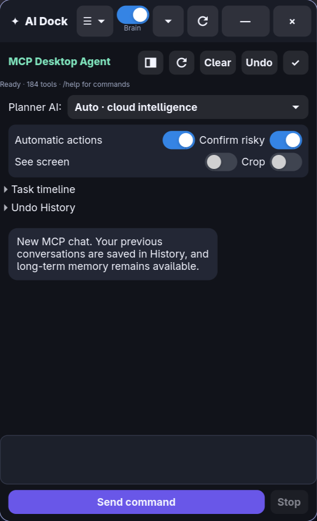
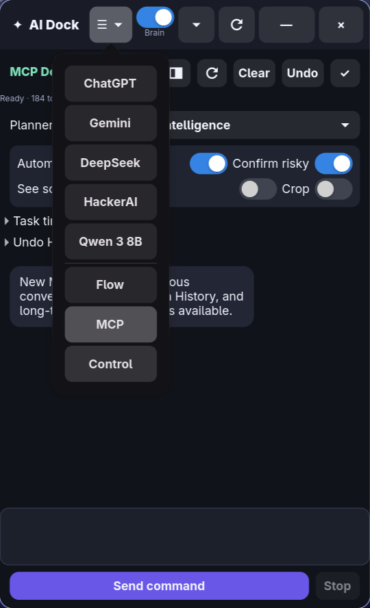
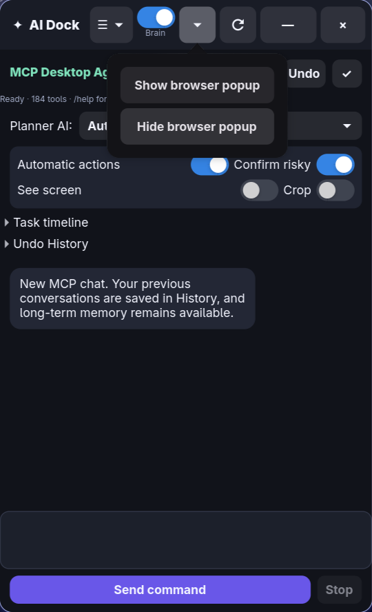
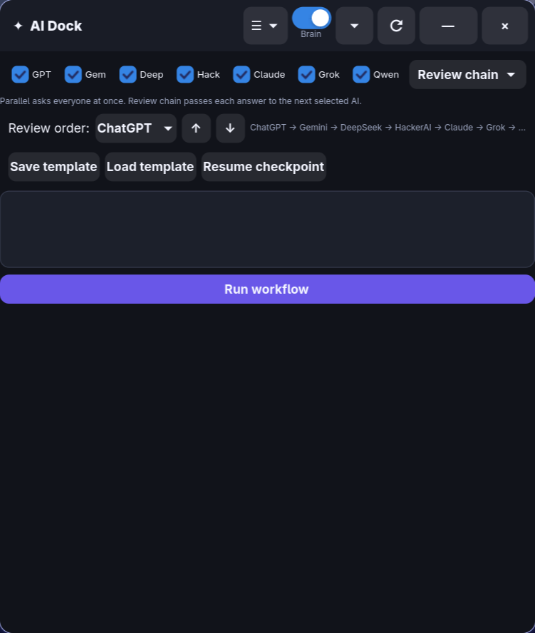
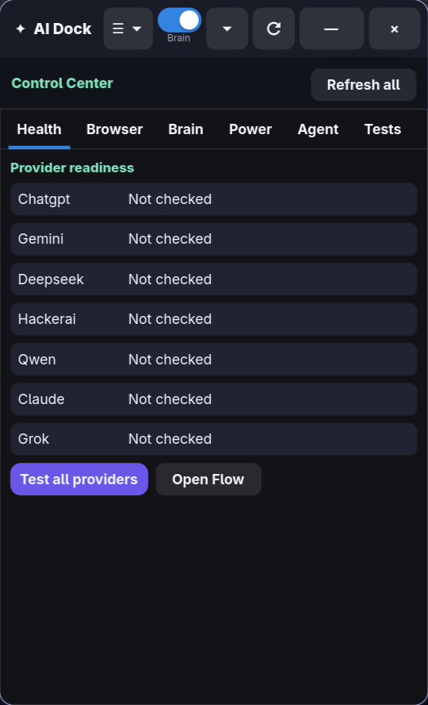
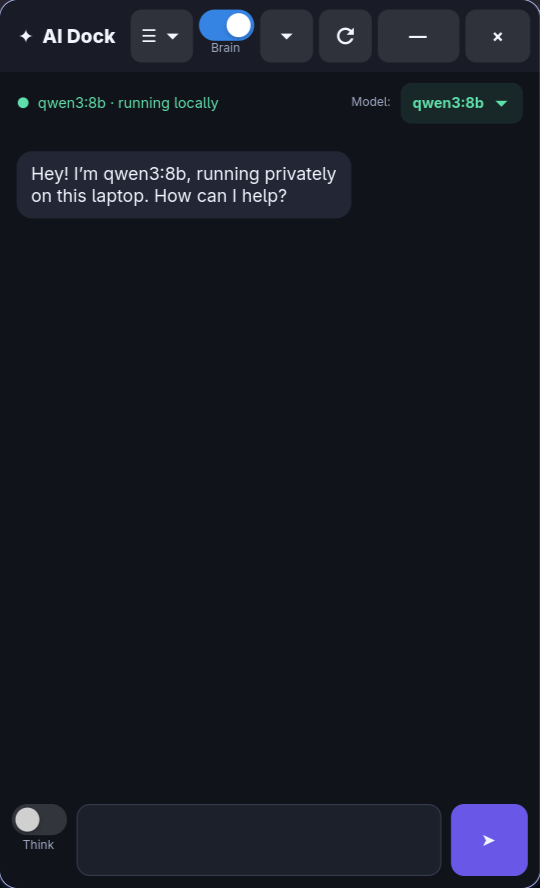

A validated natural-language desktop agent that turns informal requests into observable, recoverable MCP workflows.
184 active tools, adaptive cloud planning, risky-action confirmation, screen consent, task timelines, undo and persistent history.



Select providers, switch from Parallel to Review Chain, reorder the sequence, save templates and resume checkpoints.

Inspect providers, sessions, memory, capabilities, task recovery and regressions without leaving the dock.

Qwen stays available for private local conversation. Thinking can be toggled per question; privileged MCP planning remains separately validated.

Codex inspected the live CachyOS and Hyprland environment, implemented cross-file capabilities, diagnosed failures and converted them into permanent regression tests. The human drove product direction, safety choices and acceptance.